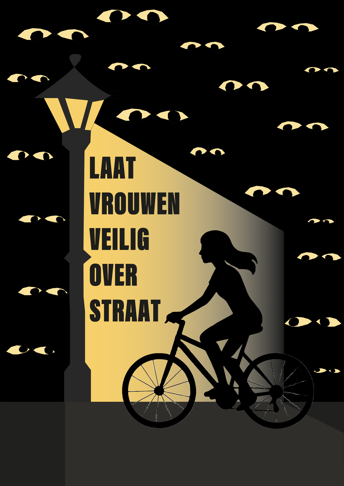

← Terug naar projecten
Graphic Matters
Grafisch Affiche • Typografie • Expositie
Over het project
Dit was mijn eerste opdracht voor een opdrachtgever. Namelijk Graphic Matters. Ik moest een poster ontwerpen dat een visueel antwoord geeft op de vraag: “Waar moeten we volgens jou écht mee stoppen?” Ik dacht gelijk aan dat we moeten stoppen met vrouwen onveilig laten voelen op straat. Hier heb ik toen een bijpassende poster voor gemaakt. Helaas ben ik niet uitgekozen voor de top 50 beste posters, maar het gehele proces van het denkwerk tot het maakwerk vond ik erg leuk om te doen!
